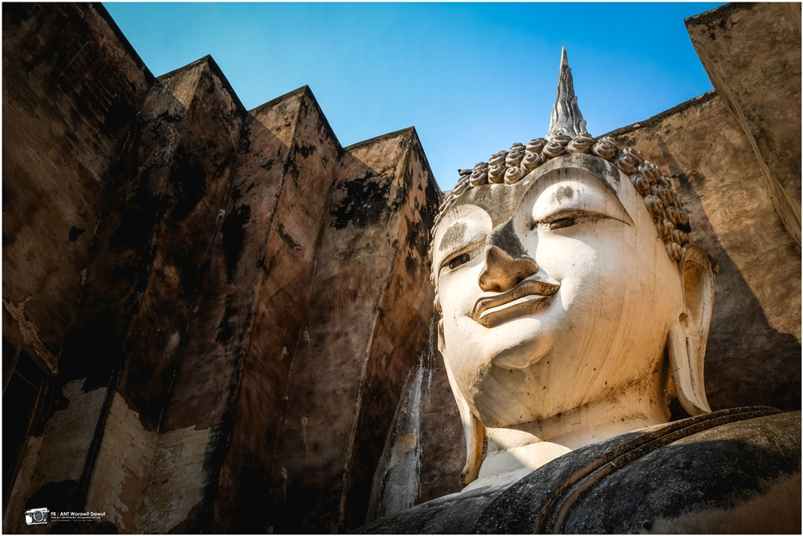
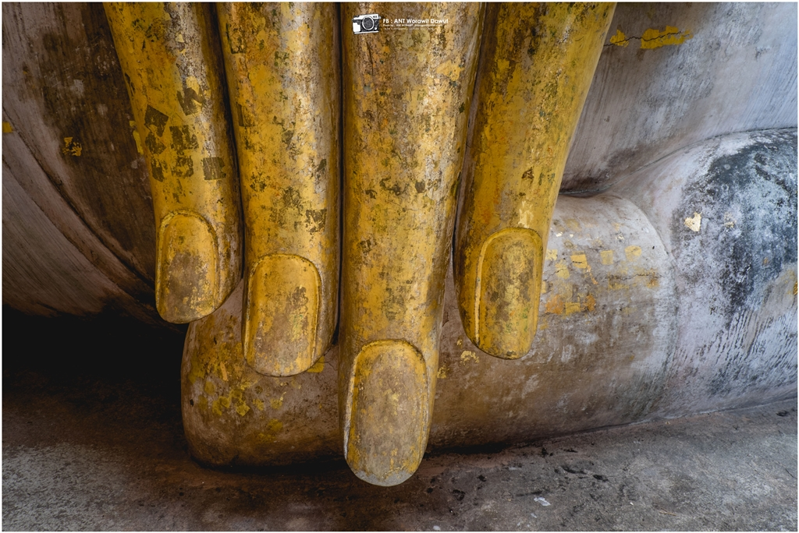

วัดศรีชุม

วัดศรีชุม
มาจากคำเรียกพื้นเมืองเดิม ซึ่งหมายถึง ต้นโพธิ์ ดังนั้นชื่อ ศรีชุม จึงหมายถึงดงของต้นโพธิ์ แต่ในหนังสือพระราชพงศาวดารกรุงศรีอยุธยาที่เขียนในสมัยอยุธยาตอนปลาย ไม่เข้าใจความหมายนี้แล้ว จึงเรียกสถานที่นั้นว่า ฤๅษีชุม วัดศรีชุมนั้น สันนิษฐานว่าสร้างในสมัยพ่อขุนรามคำแหง โดยปรากฏอยู่ในศิลาจารึกสุโขทัยหลักที่ 1 ว่า เบื้องตีนนอนเมืองสุโขทัยนี้มีพระอจนะ มีปราสาท พระประธานในมณฑปจึงมีชื่อว่า พระอจนะการเดินทาง
- ตั้งอยู่บนถนนจรดวิถีถ่อง ตรงข้ามพิพิธภัณฑสถานแห่งชาติรามคำแหง ห่างจากตัวเมืองสุโขทัยมาตามทางหลวงหมายเลข 12 (สุโขทัย-ตาก) ประมาณ 12 กม. อุทยานประวัติศาสตร์สุโขทัยเปิดให้เข้าชมทุกวัน เวลา 06.00-21.00 น. นักท่องเที่ยวชาวไทย 5 บาท ชาวต่างชาติ 500 บาท และเวลา 9.00-21.00 น. โบราณสถานต่างๆ ถูกสาดส่องด้วยแสงไฟ

สถานที่ตั้ง
-
ตำบล เมืองเก่า อำเภอเมืองสุโขทัย สุโขทัย 64210